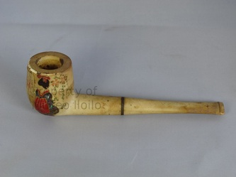

COLLECTION
British Shipwreck Collection.
Roughly 100 pieces of historical memorabilia that include remnants of a sunken British trade ship and memorabilia from local war heroes of the 1898 Revolution and World War II.


COLLECTION
Roughly 100 pieces of historical memorabilia that include remnants of a sunken British trade ship and memorabilia from local war heroes of the 1898 Revolution and World War II.
